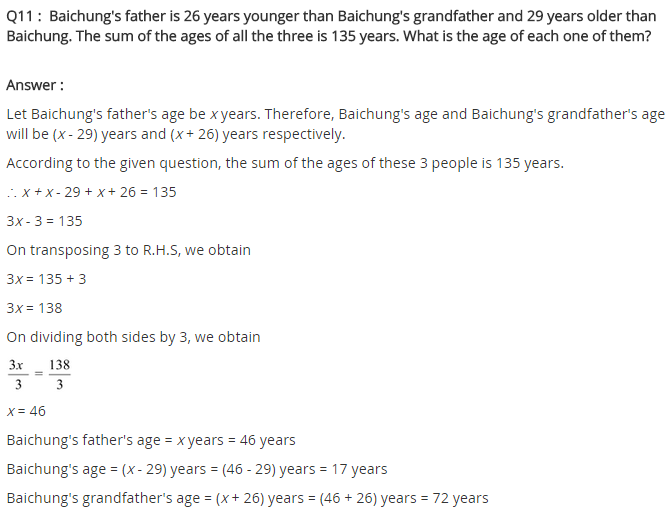
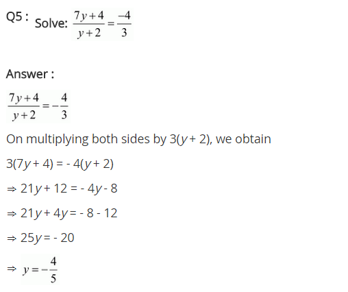
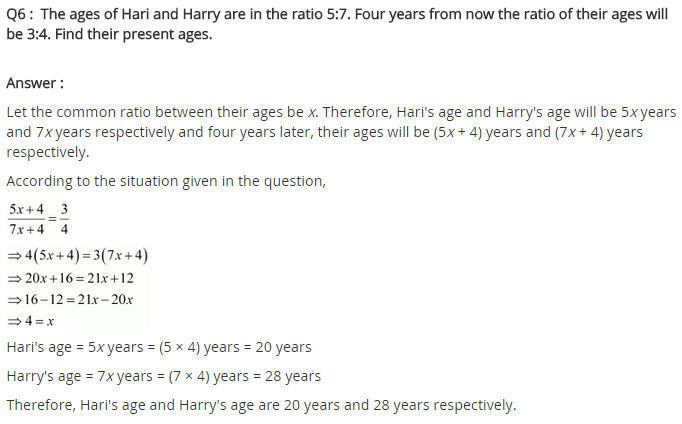

NCERT Solutions for Class 8 Maths: Mathematics is a subject that is useful for students in every phase of life. It does not matter if you are choosing science or biology or commerce stream. Some basic maths will always be there in each of these streams. Thus, it becomes important for students to have a strong base in this subject. One such help is being by us in the form of NCERT solutions for class 8 maths. Here we are providing you with the solutions to all the exercises given in the textbook. You can also practice Extra Questions for Class 8 Maths on LearnCBSE.in
NCERT Solutions for Class 8 Maths
- Chapter 1 Rational Numbers
- Chapter 2 Linear Equations in One Variable
- Chapter 3 Understanding Quadrilaterals
- Chapter 4 Practical Geometry
- Chapter 5 Data Handling
- Chapter 6 Squares and Square Roots
- Chapter 7 Cubes and Cube Roots
- Chapter 8 Comparing Quantities
- Chapter 9 Algebraic Expressions and Identities
- Chapter 10 Visualising Solid Shapes
- Chapter 11 Mensuration
- Chapter 12 Exponents and Powers
- Chapter 13 Direct and Indirect proportions
- Chapter 14 Factorisation
- Chapter 15 Introduction to Graphs
- Chapter 16 Playing with Numbers
NCERT Solutions for Class 8 Maths

NCERT Solutions for Class 8 Maths solved by Expert teachers from LearnCBSE.in. Class 8 Maths NCERT Solutions are created with utmost care and accuracy. We have reviewed, corrected typos and cross verified the solutions for the best, most detailed, accurate Free Solutions for Class 8 NCERT Mathematics. NCERT Book For Class 8 Maths strictly written as per latest CBSE guidelines. NCERT Solutions for Class 8 Maths are completely Free and you can COPY, Download and Create PDFs.
NCERT Solutions for Class 8 Maths Chapter 1 Rational Numbers
- Class 8 Maths Rational Numbers Exercise 1.1
- Class 8 Maths Rational Numbers Exercise 1.2
- Rational Numbers Class 8 Extra Questions
NCERT Solutions for Class 8 Maths Chapter 2 Linear Equations in One Variable
- Class 8 Maths Linear Equations in One Variable Exercise 2.1
- Class 8 Maths Linear Equations in One Variable Exercise 2.2
- Class 8 Maths Linear Equations in One Variable Exercise 2.3
- Class 8 Maths Linear Equations in One Variable Exercise 2.4
- Class 8 Maths Linear Equations in One Variable Exercise 2.5
- Class 8 Maths Linear Equations in One Variable Exercise 2.6
- Linear Equations in One Variable Class 8 Extra Questions
NCERT Solutions for Class 8 Maths Chapter 3 Understanding Quadrilaterals
- Class 8 Maths Understanding Quadrilaterals Exercise 3.1
- Class 8 Maths Understanding Quadrilaterals Exercise 3.2
- Class 8 Maths Understanding Quadrilaterals Exercise 3.3
- Class 8 Maths Understanding Quadrilaterals Exercise 3.4
- Understanding Quadrilaterals Class 8 Extra Questions
NCERT Solutions for Class 8 Maths Chapter 4 Practical Geometry
- Class 8 Maths Practical Geometry Exercise 4.1
- Class 8 Maths Practical Geometry Exercise 4.2
- Class 8 Maths Practical Geometry Exercise 4.3
- Class 8 Maths Practical Geometry Exercise 4.4
- Class 8 Maths Practical Geometry Exercise 4.5
- Practical Geometry Class 8 Extra Questions
NCERT Solutions for Class 8 Maths Chapter 5 Data Handling
- Class 8 Maths Data Handling Exercise 5.1
- Class 8 Maths Data Handling Exercise 5.2
- Class 8 Maths Data Handling Exercise 5.3
- Data Handling Class 8 Extra Questions
NCERT Solutions for Class 8 Maths Chapter 6 Square and Square Roots
- Class 8 Maths Squares and Square Roots Exercise 6.1
- Class 8 Maths Squares and Square Roots Exercise 6.2
- Class 8 Maths Squares and Square Roots Exercise 6.3
- Class 8 Maths Squares and Square Roots Exercise 6.4
- Squares and Square Roots Class 8 Extra Questions
NCERT Solutions for Class 8 Maths Chapter 7 Cube and Cube Roots
- Class 8 Maths Cubes and Cube Roots Exercise 7.1
- Class 8 Maths Cubes and Cube Roots Exercise 7.2
- Cubes and Cube Roots Class 8 Extra Questions
NCERT Solutions for Class 8 Maths Chapter 8 Comparing Quantities
- Class 8 Maths Comparing Quantities Exercise 8.1
- Class 8 Maths Comparing Quantities Exercise 8.2
- Class 8 Maths Comparing Quantities Exercise 8.3
- Comparing Quantities Class 8 Extra Questions
NCERT Solutions for Class 8 Maths Chapter 9 Algebraic Expressions and Identities
- Class 8 Maths Algebraic Expressions and Identities Exercise 9.1
- Class 8 Maths Algebraic Expressions and Identities Exercise 9.2
- Class 8 Maths Algebraic Expressions and Identities Exercise 9.3
- Class 8 Maths Algebraic Expressions and Identities Exercise 9.4
- Class 8 Maths Algebraic Expressions and Identities Exercise 9.5
- Algebraic Expressions and Identities Class 8 Extra Questions
NCERT Solutions for Class 8 Maths Chapter 10 Visualizing Solid Shapes
- Class 8 Maths Visualising Solid Shapes Exercise 10.1
- Class 8 Maths Visualising Solid Shapes Exercise 10.2
- Class 8 Maths Visualising Solid Shapes Exercise 10.3
- Visualising Solid Shapes Class 8 Extra Questions
NCERT Solutions for Class 8 Maths Chapter 11 Mensuration
- Class 8 Maths Mensuration Exercise 11.1
- Class 8 Maths Mensuration Exercise 11.2
- Class 8 Maths Mensuration Exercise 11.3
- Class 8 Maths Mensuration Exercise 11.4
- Mensuration Class 8 Extra Questions
NCERT Solutions for Class 8 Maths Chapter 12 Exponents and Powers
- Class 8 Maths Exponents and Powers Exercise 12.1
- Class 8 Maths Exponents and Powers Exercise 12.2
- Exponents and Powers Class 8 Extra Questions
NCERT Solutions for Class 8 Maths Chapter 13 Direct and Inverse Proportions
- Class 8 Maths Direct and Inverse Proportions Exercise 13.1
- Class 8 Maths Direct and Inverse Proportions Exercise 13.2
- Direct and Inverse Proportions Class 8 Extra Questions
NCERT Solutions for Class 8 Maths Chapter 14 Factorisation
- Class 8 Maths Factorisation Exercise 14.1
- Class 8 Maths Factorisation Exercise 14.2
- Class 8 Maths Factorisation Exercise 14.3
- Class 8 Maths Factorisation Exercise 14.4
- Factorisation Class 8 Extra Questions
NCERT Solutions for Class 8 Maths Chapter 15 Introduction to Graphs
- Class 8 Maths Introduction to Graphs Exercise 15.1
- Class 8 Maths Introduction to Graphs Exercise 15.2
- Class 8 Maths Introduction to Graphs Exercise 15.3
- Introduction to Graphs Class 8 Extra Questions
NCERT Solutions for Class 8 Maths Chapter 16 Playing with Numbers
- Class 8 Maths Playing with Numbers Exercise 16.1
- Class 8 Maths Playing with Numbers Exercise 16.2
- Playing with Numbers Class 8 Extra Questions
Maths Formulas for Class 8
NCERT Solutions for Class 8 Maths (Download PDF)
With the help of NCERT solutions for class 8 maths, you get chapter wise solutions of each and every exercise. Thus, it helps you solve and practice the questions at your convenience and with ease. This article will also help you develop an understanding of all the chapters that are there in the NCERT maths textbook. You can share this link with your friends and help them understand the topics better. Below we are providing an overview of all the chapters that are covered in the NCERT textbook in the same order.
Here is the list of Main Topics from Class 8 Maths NCERT Text Book:
Class 8 Maths Chapter 1 Rational Numbers
This chapter will help you understand about the integers, properties of real integers, rational numbers, and whole numbers. Furthermore, how rational numbers are represented on a number line is also explained. You will be able to search the rational numbers between any of the given two rational numbers through this chapter.
- 1.1 Introduction
- 1.2 Properties Of Rational Numbers
- 1.3 Representation Of Rational Numbers On The Number Line
- 1.4 Rational Numbers Between Two Rational Numbers
Class 8 Maths Chapter 2 Linear Equation in One Variable
As you go ahead in maths, you will notice the importance of linear equations. Thus, this makes a very important chapter to understand and remember. The mathematics you will study in advance classes is purely based on various equations that involve variables. A total of 65 questions in six exercises is given for students to practice and learn. You also are learning to perform the mathematical operations on either side of an equation.
- 2.1 Introduction
- 2.2 Solving Equations Which Have Linear Expressions On One Side And Numbers On The Other Side
- 2.3 Some Applications
- 2.4 Solving Equations Having The Variable On Both Sides
- 2.5 Some More Applications
- 2.6 Reducing Equations To Simpler Form
- 2.7 Equations Reducible To The Linear Form
NCERT Solutions for Class 8 Maths Chapter 2 Linear Equations in One Variable Exercise 2.1
Question 1.
Solve the equation: x – 2 = 7.
Solution:
Given: x – 2 = 7
⇒ x – 2 + 2 = 7 + 2 (adding 2 on both sides)
⇒ x = 9 (Required solution)
Question 2.
Solve the equation: y + 3 = 10.
Given: y + 3 = 10
⇒ y + 3 – 3 = 10 – 3 (subtracting 3 from each side)
⇒ y = 7 (Required solution)
Question 3.
Solve the equation: 6 = z + 2
Solution:
We have 6 = z + 2
⇒ 6 – 2 = z + 2 – 2 (subtracting 2 from each side)
⇒ 4 = z
Thus, z = 4 is the required solution.
Question 4.
Solve the equations: \(\frac { 3 }{ 7 }\) + x = \(\frac { 17 }{ 7 }\)
Solution:
Question 5.
Solve the equation 6x = 12.
Solution:
We have 6x = 12
⇒ 6x ÷ 6 = 12 ÷ 6 (dividing each side by 6)
⇒ x = 2
Thus, x = 2 is the required solution.
Question 6.
Solve the equation \(\frac { t }{ 5 }\) = 10.
Solution:
Given \(\frac { t }{ 5 }\) = 10
⇒ \(\frac { t }{ 5 }\) × 5 = 10 × 5 (multiplying both sides by 5)
⇒ t = 50
Thus, t = 50 is the required solution.
Question 7.
Solve the equation \(\frac { 2x }{ 3 }\) = 18.
Solution:
We have \(\frac { 2x }{ 3 }\) = 18
⇒ \(\frac { 2x }{ 3 }\) × 3 = 18 × 3 (multiplying both sides by 3)
⇒ 2x = 54
⇒ 2x ÷ 2 = 54 ÷ 2 (dividing both sides by 2)
⇒ x = 27
Thus, x = 27 is the required solution.
Question 8.
Solve the equation 1.6 = \(\frac { y }{ 1.5 }\)
Solution:
Given: 1.6 = \(\frac { y }{ 1.5 }\)
⇒ 1.6 × 1.5 = \(\frac { y }{ 1.5 }\) × 1.5 (multiplying both sides by 1.5)
⇒ 2.40 = y
Thus, y = 2.40 is the required solution.
Question 9.
Solve the equation 7x – 9 = 16.
Solution:
We have 7x – 9 = 16
⇒ 7x – 9 + 9 = 16 + 9 (adding 9 to both sides)
⇒ 7x = 25
⇒ 7x ÷ 7 = 25 ÷ 7 (dividing both sides by 7)
⇒ x = \(\frac { 25 }{ 7 }\)
Thus, x = \(\frac { 25 }{ 7 }\) is the required solution.
Question 10.
Solve the equation 14y – 8 = 13.
Solution:
We have 14y – 8 = 13
⇒ 14y – 8 + 8 = 13 + 8 (adding 8 to both sides)
⇒ 14y = 21
⇒ 14y ÷ 14 = 21 ÷ 14 (dividing both sides by 14)
⇒ y = \(\frac { 21 }{ 14 }\)
⇒ y = \(\frac { 3 }{ 2 }\)
Thus, y = \(\frac { 3 }{ 2 }\) is the required solution.
Question 11.
Solve the equation 17 + 6p = 9.
Solution:
We have, 17 + 6p = 9
⇒ 17 – 17 + 6p = 9 – 17 (subtracting 17 from both sides)
⇒ 6p = -8
⇒ 6p ÷ 6 = -8 ÷ 6 (dividing both sides by 6)
⇒ p = \(\frac { -8 }{ 6 }\)
⇒ p = \(\frac { -4 }{ 3 }\)
Thus, p = \(\frac { -4 }{ 3 }\) is the required solution.
Question 12.
Solve the equation \(\frac { x }{ 3 }\) + 1 = \(\frac { 7 }{ 15 }\)
Solution:
Move to Top of the page.
NCERT Solutions for Class 8 Maths Chapter 2 Linear Equations in one Variable Ex 2.2


Move to Top of the page.
NCERT Solutions for Class 8 Maths Chapter 2 Linear Equations in one Variable Ex 2.3
Move to Top of the page.
NCERT Solutions for Class 8 Maths Chapter 2 Linear Equations in one Variable Ex 2.4
Move to Top of the page.
NCERT Solutions for Class 8 Maths Chapter 2 Linear Equations in one Variable Ex 2.5
Move to Top of the page.
NCERT Solutions for Class 8 Maths Chapter 2 Linear Equations in one Variable Ex 2.6


Move to Top of the page.
Class 8 Maths Chapter 3 Understanding quadrilaterals
Geometry is another topic that is going to be important for advanced math classes. This chapter will introduce you to the basics of a quadrilateral, a polygon with 4 sides. A cube-shaped object formed by connecting various line segments is called a polygon and then are various shapes in polygons. It depends on the angle between the two line segments and the number of line segments. The shapes can quadrilateral, triangle, hexagon, pentagon, etc. When each and every side of the polygon is equal and the external angles are at 360° than that polygon is called quadrilateral.
- 3.1 Introduction
- 3.2 Polygons
- 3.3 Sum Of The Measures Of The Exterior Angles Of A Polygon
- 3.4 Kinds Of Quadrilaterals
- 3.5 Some Special Parallelograms
Class 8 Maths Chapter 4 Practical Geometry
This chapter includes drawing 4 sides in a quadrilateral with 2 adjacent sides, 3 angles and 1 diagonal area given to you. You will be further explained how to draw different types of quadrilateral in this chapter.
- 4.1 Introduction
- 4.2 Constructing A Quadrilateral
- 4.3 Some Special Cases
Class 8 Maths Chapter 5 Knowledge Handling
Data has become a very important tool in recent years. But with the amount of data available, the next step becomes very important, that is how to handle the data. This chapter will help you develop basic knowledge on how to handle the data and arrange it systematic order so that meaningful results can be interpreted. This is done to induce clear knowledge of the data and to diagrammatically represent it in the form of a bar graph, pie chart, double bar graph, etc.
- 5.1 Looking For Information
- 5.2 Organising Data
- 5.3 Grouping Data
- 5.4 Circle Graph Or Pie Chart
- 5.5 Chance And Probability
Class 8 Maths Chapter 6 Squares and Square Roots
This chapter offers a plan to discuss the various roots of a number. Suppose a number A is represented because the square of other number say B, then B here, is the square root of A. The number is said to be an excellent square when the roots of a number are also a number. This strategy of finding roots is very useful in higher standards.
- 6.1 Introduction
- 6.2 Properties Of Square Numbers
- 6.3 Some More Interesting Patterns
- 6.4 Finding The Square Of A Number
- 6.5 Square Roots
Class 8 Maths Chapter 7 Cube and Cube Roots
There are numerous ways through which you can seek out the cubes and cube roots of a number. But in this chapter, you will learn about these cubes by adding consecutive odd number pattern.
- 7.1 Introduction
- 7.2 Cubes
- 7.3 Cube Roots
Class 8 Maths Chapter 8 Comparing Quantities
When you compare quantities, you need to have an increase or decrease of percentage, sales value, market value, discount, and the discounted value of the product to check whether you have made profit or loss. This chapter further dwells into extra expenses that are incurred like excise tax, acquisition of piece, whether interest is compounded yearly, half-yearly, or quarterly, etc.
- 8.1 Recalling Ratios And Percentages
- 8.2 Finding The Increase Or Decrease percent
- 8.3 Finding Discounts
- 8.4 Prices Related To Buying And Selling (profit And Loss)
- 8.5 Sales Tax/Value Added Tax
- 8.6 Compound Interest
- 8.7 Deducing A Formula For Compound Interest
- 8.8 Rate Compounded Annually Or Half Yearly (semi Annually)
- 8.9 Applications Of Compound Interest Formula
Class 8 Maths Chapter 9 Algebraic Identities and Expressions
This chapter explains the mathematics expressions and identities along with their implementation. It also explains the terms area unit that is used additionally to express pure mathematics expressions and how these terms are shaped based on different products. This chapter further dwells into binomials, monomials, trinomials, and much more based on the number of terms. It also explains the multiplication of polynomials by polynomials and the addition of mathematical expression.
- 9.1 What Are Expressions?
- 9.2 Terms, Factors And Coefficients
- 9.3 Monomials, Binomials And Polynomials
- 9.4 Like And Unlike Terms
- 9.5 Addition And Subtraction Of Algebraic Expressions
- 9.6 Multiplication Of Algebraic Expressions: Introduction
- 9.7 Multiplying A Monomial By A Monomial
- 9.8 Multiplying A Monomial By A Polynomial
- 9.9 Multiplying A Polynomial By A Polynomial
- 9.10 What Is An Identity?
- 9.11 Standard Identities
- 9.12 Applying Identities
Class 8 Maths Chapter 10 Visualising Solid Shapes
In this chapter, you will study the solid objects that have height, length, and breadth and thus they are referred to as 3D objects. Along with you will also learn about the edges, faces, and vertices about some solid figures like triangular pyramids, cuboids, square base, and triangular prisms, etc. You will also study the applications of Euler’s formula.
- 10.1 Introduction
- 10.2 Views Of 3d-Shapes
- 10.3 Mapping Space Around Us
- 10.4 Faces, Edges And Vertices
Class 8 Maths Chapter 11 Mensuration
This chapter will deal with issues related to areas and perimeter of closed figures. Along with this, you will study the volume of solid figures like a cylinder, cube, cuboid, and so on. You will also get to know how to transform the quantity into various units.
- 11.1 Introduction
- 11.2 Let Us Recall
- 11.3 Area Of Trapezium
- 11.4 Area Of A General Quadrilateral
- 11.5 Area Of A Polygon
- 11.6 Solid Shapes
- 11.7 Surface Area Of Cube, Cuboid, and Cylinder
- 11.8 Volume Of Cube, Cuboid, and Cylinder
- 11.9 Volume And Capacity
Chapter 12: Exponents and power
The primary thing you will study in this chapter is power and exponents: power that has negative exponents, decimal numbers and their scientific documentation, the dependency of the exponent’s law, utilizing exponents in order to express the numbers and comparing small numbers to extremely large numbers.
- 12.1 Introduction
- 12.2 Powers With Negative Exponents
- 12.3 Laws Of Exponents
- 12.4 Use Of Exponents To Express Small Numbers In Standard Form
Class 8 Maths Chapter 13 Inverse and Direct Proportions
The questions in this chapter will give you details on inverse and direct proportions. This inverse and direct proportions are identified based on the relative decrease or increase of one quantity with respect to other quantities. The questions in this chapter will be from daily life and interesting.
- 13.1 Introduction
- 13.2 Direct Proportion
- 13.3 Inverse Proportion
Class 8 Maths Chapter 14 Factorisation
This chapter is based on the factorization of algebraic expressions and natural numbers. This can is either algebraic values, numbers, or expressions. Furthermore, you will learn about the factorization method used for common factors, by using identities, factors, and regrouping terms. You will also learn division of one polynomial by other, monomial by monomial or polynomial, and finding an error in algebraic equations.
- 14.2 What Is Factorisation?
- 14.3 Division Of Algebraic Expressions
- 14.4 Division Of Algebraic Expressions Continued (polynomial ÷ Polynomial)
- 14.5 Can You Find The Error?
Class 8 Maths Chapter 15 Introduction to Graphs
In this chapter you understand the purpose and importance of graphs, to show the numerical facts in visual forms so that everyone is able to understand the concept very easily. You will also study about quantity and cost, simple and principal interest, time and distance, on graphs with the use of independent and dependent variables.
- 15.1 Introduction
- 15.2 Linear Graphs
- 15.3 Some Applications
Class 8 Maths Chapter 16 Playing with numbers
In this chapter, you will deal with numbers in a general form. There are also puzzles and games in this chapter related to numbers. There are also divisibility tests along with questions based on them.
- 16.1 Introduction
- 16.2 Numbers In General Form
- 16.3 Games With Numbers
- 16.4 Letters For Digits
- 16.5 Tests Of Divisibility
It is important to prepare for the entrance exam along with the school exams. This NCERT solutions for class 8 maths helps you precisely with that. We will also keep content related to other subjects updated on our website so that you can find everything in one place.
FAQs on NCERT Solutions for Class 8 Maths
1. How do I start the Class 8 Maths (CBSE)?
Best Resources to begin preparation for Class 8 Maths is through NCERT Textbook Solutions. Try covering all the topics so that you will not have any difficulty during the time of the exam.
2. How can I score good marks in the Maths Class 8 CBSE?
Candidates can score good marks in the CBSE Class 8 Maths Exam by making use of the ultimate preparation tools like Study Materials, Notes & Syllabus, NCERT Solutions, etc. Practice as many times as possible and revise the concepts thoroughly.
3. Where can I get solutions for NCERT class 8 Maths Chapterwise?
Aspirants can get the NCERT Class 8 Maths Chapterwise Solutions by referring to the quick links made available on our page. Go through the topics listed under parent topics as per your choice and prepare well for the exam.
4. Which book of mathematics should I refer in Class 8?
You can refer to the Standard NCERT Textbooks prescribed by the CBSE Board for your Class 8 Mathematics Exam Preparation.
5. What is the best way of studying in Class 8?
The best way of studying for Class 8 is by practicing Previous Papers, referring to NCERT Solutions. You can score better grades in the exam with the ultimate preparation tools.
6. How can I download the Class 8 Maths Sample Papers PDF?
You can download the Class 8 Maths Previous Papers PDF through the direct links available on our page.
More CBSE Class 8 Study Material
- NCERT Solutions for Class 8 Maths
- NCERT Solutions for Class 8 Science
- NCERT Solutions for Class 8 Social Science
- NCERT Solutions for Class 8 English
- NCERT Solutions for Class 8 English Honeydew
- NCERT Solutions for Class 8 English It So Happened
- NCERT Solutions for Class 8 Hindi
- NCERT Solutions for Class 8 Sanskrit
- NCERT Solutions